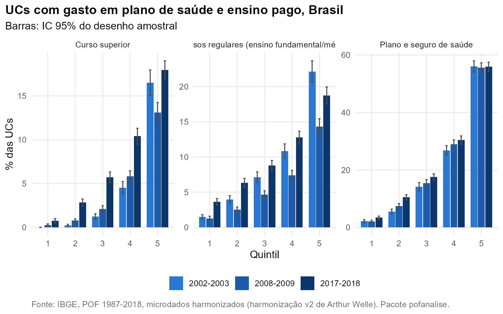

Pergunta. Quem gasta do próprio bolso com saúde e educação, e quanto?
Método. Participação no consumo sem aluguel por quintil (RMs, cinco edições) e prevalência de gasto, com IC de 95%, no Brasil de 2002 em diante. Folhas: remédios (22101), plano e seguro de saúde (22301), cursos regulares (23101) e curso superior (23102). Em 1987-1988 não existe a folha de cursos regulares, o que torna a educação daquela edição incompleta.
Saúde
A assistência à saúde pesa 8,2% no consumo do 1º quintil e 11,6% no do 5º em 2017-2018, mas com composições opostas. Remédios pesam 6,5% no 1º quintil e 3,3% no 5º; plano de saúde, 0,7% e 5,9%. No Brasil, têm gasto com plano de saúde 3,4% (IC 95%: 2,9 a 4,0) das UCs do 1º quintil e 55,9% (IC 95%: 54,4 a 57,5) das do 5º.
Educação
A participação da educação cresce com o consumo: 3,3% no 1º quintil e 8,5% no 5º em 2017-2018. O curso superior pago é o item que mais se espalhou: a proporção de UCs com esse gasto no 3º quintil vai de 1,2% (IC 95%: 0,9 a 1,6) em 2002-2003 para 5,7% (IC 95%: 5,1 a 6,3) em 2017-2018. O período coincide com a expansão do ensino superior privado e do financiamento estudantil; esta análise descreve, não identifica causa.

| Nome | Quintil | 2002-2003 | 2008-2009 | 2017-2018 |
|---|---|---|---|---|
| Curso superior | 1 | 0,0 [-0,0; 0,0] | 0,3 [0,2; 0,4] | 0,8 [0,5; 1,0] |
| Curso superior | 2 | 0,2 [0,1; 0,4] | 0,8 [0,6; 1,0] | 2,8 [2,4; 3,2] |
| Curso superior | 3 | 1,2 [0,9; 1,6] | 2,1 [1,7; 2,5] | 5,7 [5,1; 6,3] |
| Curso superior | 4 | 4,5 [3,8; 5,2] | 5,8 [5,2; 6,5] | 10,4 [9,5; 11,3] |
| Curso superior | 5 | 16,5 [15,0; 18,0] | 13,1 [12,0; 14,3] | 18,0 [16,9; 19,0] |
| Cursos regulares (ensino fundamental/médio) | 1 | 1,5 [1,2; 1,8] | 1,3 [1,0; 1,6] | 3,6 [3,2; 4,1] |
| Cursos regulares (ensino fundamental/médio) | 2 | 4,0 [3,4; 4,5] | 2,5 [2,1; 2,9] | 6,3 [5,7; 7,0] |
| Cursos regulares (ensino fundamental/médio) | 3 | 7,1 [6,4; 7,9] | 4,7 [4,1; 5,2] | 8,8 [8,1; 9,5] |
| Cursos regulares (ensino fundamental/médio) | 4 | 10,8 [9,8; 11,9] | 7,4 [6,7; 8,1] | 12,8 [11,9; 13,7] |
| Cursos regulares (ensino fundamental/médio) | 5 | 22,1 [20,6; 23,7] | 14,3 [13,2; 15,4] | 18,7 [17,5; 19,9] |
| Plano e seguro de saúde | 1 | 2,2 [1,6; 2,7] | 2,1 [1,6; 2,5] | 3,4 [2,9; 4,0] |
| Plano e seguro de saúde | 2 | 5,6 [4,7; 6,4] | 7,5 [6,6; 8,3] | 10,5 [9,6; 11,4] |
| Plano e seguro de saúde | 3 | 14,2 [12,8; 15,6] | 15,4 [14,1; 16,7] | 17,6 [16,5; 18,7] |
| Plano e seguro de saúde | 4 | 26,8 [25,2; 28,5] | 29,0 [27,5; 30,5] | 30,5 [29,1; 31,9] |
| Plano e seguro de saúde | 5 | 56,0 [54,1; 58,0] | 55,6 [54,0; 57,3] | 55,9 [54,4; 57,5] |
Reproduzir
dados <- pof_carregar(c(2002, 2008, 2017), dir, itens = list(plano = "22301", superior = "23102"))
plot(pof_analisar(dados, "plano", por = "quintil"))
pof_diferenca(dados, "superior", por = "cor")